På den här sidan kommer du få information om olika områden inom matematiken som man lär sig under gymnasiet
Derivatan är ett centralt begrepp inom matematiken och används för att beskriva hur snabbt en funktion förändras i en viss punkt. Man kan säga att derivatan visar funktionens förändringstakt. Om man ritar en funktion som en graf motsvarar derivatan lutningen på tangenten till kurvan i en specifik punkt. Om derivatan är positiv växer funktionen, om den är negativ avtar funktionen, och om derivatan är noll har funktionen en topp, botten eller en plan punkt.
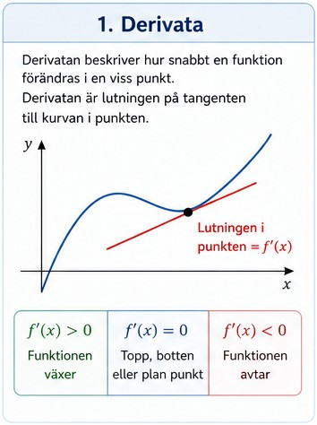
Matematiskt definieras derivatan med hjälp av ett gränsvärde, där man undersöker hur kvoten mellan förändringen i funktionens värde och förändringen i x beter sig när förändringen i x blir mycket liten. Denna definition ligger till grund för alla deriveringsregler, men i praktiken använder man oftast färdiga regler för att göra beräkningarna enklare.
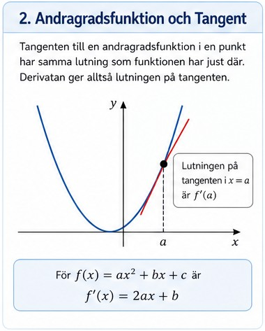
Att derivera innebär att man bestämmer derivatan av en funktion. Det finns flera viktiga regler som används. En av de vanligaste är potensregeln, som säger att om man har en funktion av typen x upphöjt till n, så blir derivatan n gånger x upphöjt till n minus 1. Till exempel blir derivatan av x³ lika med 3x². En annan regel är att derivatan av en konstant alltid är noll. Om man har en summa av flera termer deriverar man varje term för sig. Till exempel blir derivatan av x² + x lika med 2x + 1.
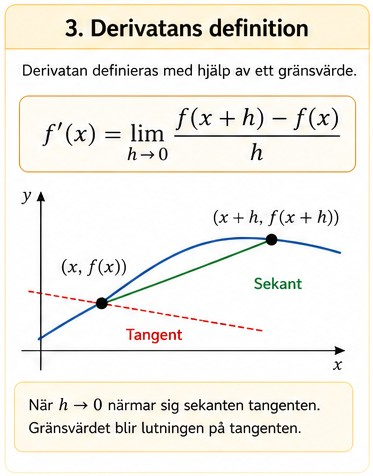
Det finns också mer avancerade regler, som produktregeln och kedjeregeln. Produktregeln används när två funktioner multipliceras med varandra och säger att man ska derivera den ena funktionen och multiplicera med den andra, och sedan tvärtom, och lägga ihop resultaten. Kedjeregeln används när man har en funktion inuti en annan funktion och innebär att man deriverar den yttre funktionen och multiplicerar med derivatan av den inre funktionen.
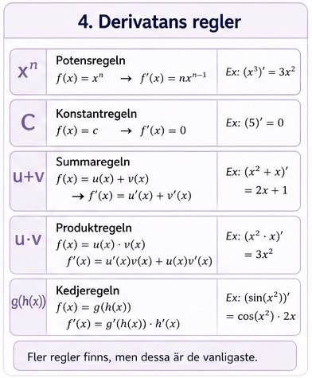
Som exempel kan man derivera funktionen f(x) = 3x² + 2x + 1. Genom att använda reglerna får man derivatan f'(x) = 6x + 2.
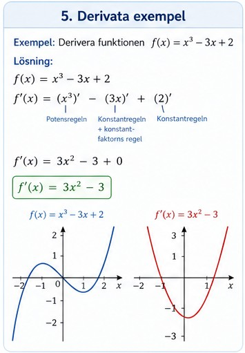
För att en funktion ska vara deriverbar i en punkt finns det vissa krav. Funktionen måste vara kontinuerlig, vilket betyder att den inte får ha några hopp eller avbrott. Dessutom måste funktionen vara tillräckligt "slät", vilket innebär att den inte får ha några skarpa hörn eller spetsar. Slutligen måste gränsvärdet som definierar derivatan existera och ge ett bestämt värde.
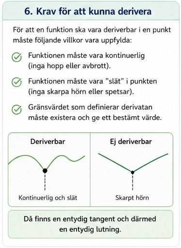
Det finns också situationer där en funktion inte går att derivera. Det gäller till exempel vid hörn, som i absolutbeloppsfunktioner, vid lodräta tangenter eller vid diskontinuiteter där funktionen har ett hopp.
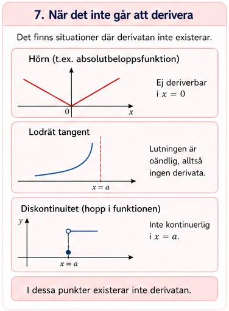
Sammanfattningsvis är derivatan ett verktyg för att beskriva förändring och lutning. Den används inom många områden, som fysik, ekonomi och teknik, och är en viktig del av matematiken på gymnasienivå. Om du vill lära dig mer om derivatan och dess tillämpningar kan du kolla in på vår sida om Derivata där du hittar övningar för att träna på derivator.
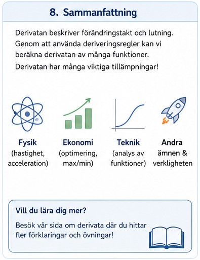
Logaritmer är ett viktigt begrepp inom matematiken och används för att beskriva samband där något växer eller minskar snabbt, till exempel exponentiell tillväxt. En logaritm svarar på frågan: “till vilken exponent måste man upphöja ett tal för att få ett visst resultat?”. Till exempel betyder log4(16) = 2 eftersom 4^2 = 16.
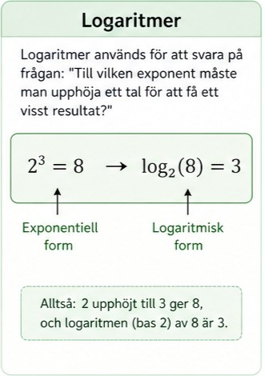
Logaritmer är nära kopplade till exponentialfunktioner. Om man har en exponentialfunktion kan man använda logaritmer för att “backa” och hitta exponenten. Logaritmen är alltså inversen till exponentialfunktionen. Detta gör logaritmer väldigt användbara när man löser ekvationer där variabeln finns i exponenten.
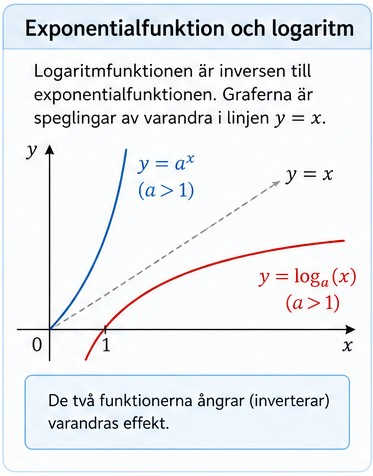
En logaritm definieras som logₐ(x) = y om och endast om aʸ = x, där a är basen. De vanligaste logaritmerna är tiologaritmen (log) och den naturliga logaritmen (ln), där ln har basen e (ungefär 2,718). Dessa används ofta inom olika områden som fysik, ekonomi och naturvetenskap.
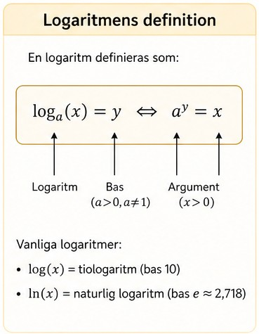
Det finns flera viktiga regler för logaritmer som gör det enklare att räkna med dem. Produkten av två tal blir summan av deras logaritmer: log(ab) = log(a) + log(b). Kvoten av två tal blir skillnaden: log(a/b) = log(a) − log(b). Om man har en exponent kan man flytta ner den framför logaritmen: log(aⁿ) = n·log(a). Dessa regler används ofta för att förenkla uttryck.
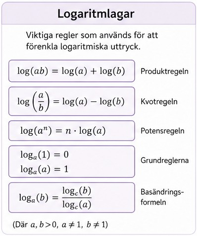
Som exempel kan man lösa ekvationen 10ˣ = 1000. Genom att använda logaritmer får man x = log(1000) = 3. På samma sätt kan man använda ln för ekvationer med basen e.
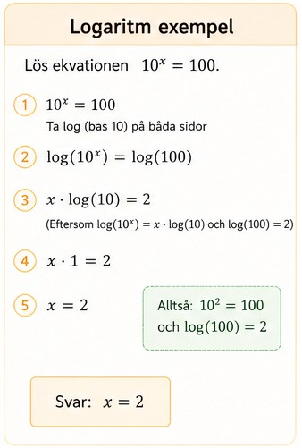
För att en logaritm ska vara definierad måste vissa villkor uppfyllas. Talet inuti logaritmen måste vara större än noll, eftersom man inte kan ta logaritmen av noll eller negativa tal. Basen måste också vara positiv och får inte vara lika med 1.
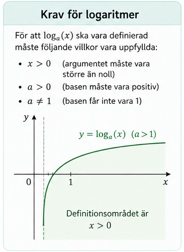
Logaritmer är inte definierade för negativa tal eller noll. Till exempel går det inte att beräkna log(−5) eller log(0). Detta är viktigt att tänka på när man löser ekvationer eller ritar grafer.
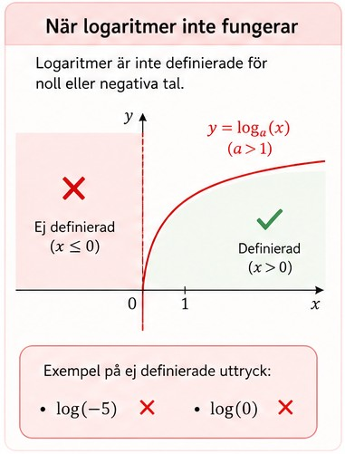
Logaritmer används för att beskriva och lösa problem där exponenter är inblandade. De är särskilt viktiga inom områden som tillväxt, ränta, ljudnivåer och pH-värden. Genom att använda logaritmlagar kan man förenkla beräkningar och lösa avancerade problem på ett smidigt sätt.